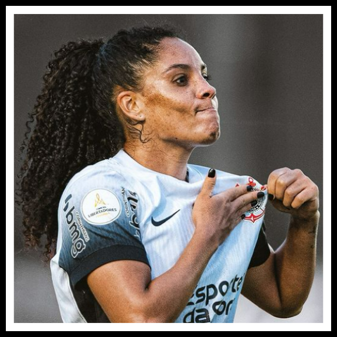

-
1° Yasmin
Yasmim Assis Ribeiro, mais conhecida como Yasmim (Governador Valadares, 28 de outubro de 1996) é uma futebolista brasileira que atuou como lateral-esquerda no Corinthians entre 2017 e 2024. Yasmin fez 236 jogos com a camisa do timão, acumulando 194 vitórias, 26 empates e 14 derrotas. Ela consquistou incríveis 17 títulos com o clube o que a torna o/a jogador(a) que mais conquistou títulos pelo Corinthians
-
2° Paulinha
Paula Andressa Santiago Baptista Pires, mais conhecida como Paulinha (Rio de Janeiro, 14 de fevereiro de 1988) é uma futebolista brasileira que atua como lateral-direita e voltou a jogar pelo Corinthians em 2022. Considerando todas as passagens da Paulinha, fez 237 jogos com a camisa do timão, acumulando 180 vitórias, 38 empates e 19 derrotas. Ela consquistou incríveis 16 títulos com o clube.
-
3° Gabi Zanotti
Gabriela Maria Zanotti Demoner (Itaguaçu, 28 de fevereiro de 1985), mais conhecida como Gabi Zanotti, é uma futebolista brasileira que atua como meia-atacante pelo Corinthians desde 2018. Gabi Zanotti já fez 209 jogos com a camisa do timão, acumulando 173 vitórias, 23 empates e 13 derrotas. Ela consquistou incríveis 16 títulos com o clube.
-
4° Vic Albuquerque
Victória Kristine Albuquerque de Miranda, mais conhecida como Vic Albuquerque ou simplesmente Victória (Brasília, 14 de março de 1998), é uma futebolista brasileira que atua como meio-campista e voltou a jogar no Corinthians em 2022. Considerando todas as passagens da Vic Albuquerque, fez 203 jogos com a camisa do timão, acumulando 170 vitórias, 21 empates e 12 derrotas. Ela consquistou incríveis 16 títulos com o clube.
-
5° Grazi
Grazielle Pinheiro Nascimento, conhecida como Grazi (Brasília, 28 de março de 1981), é uma ex-futebolista brasileira que atuou como volante e meia no Corinthians entre 2016 e 2023. Grazi fez 258 jogos com a camisa do timão, acumulando 201 vitórias, 36 empates e 21 derrotas. Ela consquistou incríveis 15 títulos com o clube
-
6° Tamires
Tamires Cássia Dias Gomes (Caeté, 10 de outubro de 1987)[1] é uma futebolista profissional brasileira que atua como lateral-esquerda no Corinthians desde 2018. Tamires já fez 171 jogos com a camisa do timão, acumulando 143 vitórias, 19 empates e 9 derrotas. Ela consquistou incríveis 15 títulos com o clube.
-
7° Gabi Portilho
Gabrielle Jordão Portilho, mais conhecida como Gabi Portilho (Brasília, 18 de julho de 1995), é uma futebolista brasileira que atuou na posição de atacantea no Corinthians entre 2020 e 2024. Gabi fez 162 jogos com a camisa do timão, acumulando 133 vitórias, 17 empates e 12 derrotas. Ela consquistou incríveis 15 títulos com o clube